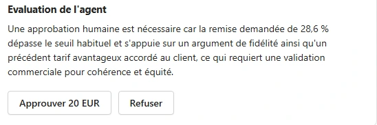

Horizon Famille: a phone call that becomes an action
A real recorded phone call reaches a voice agent. It checks the booking, quotes a change before acting, and hands a discount outside its mandate to a person in Teams.
Video 6:19 Recorded demo · mock systems · French, English subtitles
Where a person decides
The caller asks for a discount the agent has no mandate to grant. In the approval flow, a Copilot Studio agent evaluates the request, and a person in Teams receives this card: approve 20 EUR, or refuse.

Check, quote, hand over
A customer calls a real phone number. Azure Communication Services carries the call to Voice Live, and a Foundry hosted agent answers in French.
The agent verifies the caller, checks the booking against capacity and policy, and states the change and its price before acting. It makes the change only once the caller confirms.
When the caller asks for a discount, the agent does not grant it. It opens a case, and a Power Platform flow brings the decision to a person in Teams.
Built on Azure Communication Services, Azure AI Voice Live, a Foundry hosted agent, Power Automate, Copilot Studio and Teams. The CRM, ERP and knowledge base are mock services.
Where it stops
- It is a recording, not a production service or a public phone line: you can watch the call, not place one.
- The CRM, ERP and knowledge base are mocks, not live Dynamics 365 or SAP integrations.
- The call is in French, with English subtitles.
- To run it yourself, deploy it from the source with your own Azure resources, phone number and Power Platform environment.
- The recording shows one call, not a measure of how often the agent gets it right.
- Personal open-source sample, not a Microsoft product.
Know where the mandate ends
Inside its mandate, the agent said what a change would cost before making it; outside it, it passed the decision to a person. That line is the first thing I would draw for any agent.